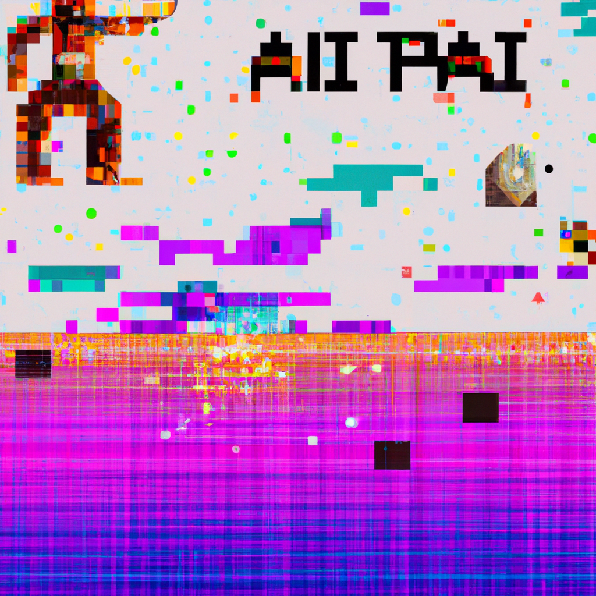

The Future of AI and Physics
AI has been making big strides in the scientific world in recent years, with impressive advancements in machine learning, natural language processing, computer vision, and more. The potential for AI to revolutionize the fields of mathematics, science, and physics is immense.
AI could be used to help analyze data more quickly and accurately than ever before. This could lead to more accurate predictions, more efficient models, and more useful insights into how the world works. AI could also be used to provide deeper insights into complex physical phenomena such as quantum mechanics and relativity.
AI could also help with the development of new technologies. For example, AI could be used to develop more efficient propulsion systems for spacecraft, enabling humans to explore space more effectively. AI could also be used to develop more powerful robots that could help with tasks in factories and laboratories.
The implications of AI in the fields of physics and mathematics are profound. With the help of AI, we could gain a better understanding of the natural world and develop new technologies that could change the way we live and work. We could also explore new areas of science and find new ways to tackle some of the most challenging problems of our time.
The possibilities are endless, and the future of AI and physics is an exciting one. As a software developer, I'm excited to help shape the future of AI and physics, and I'm looking forward to seeing what comes of it.